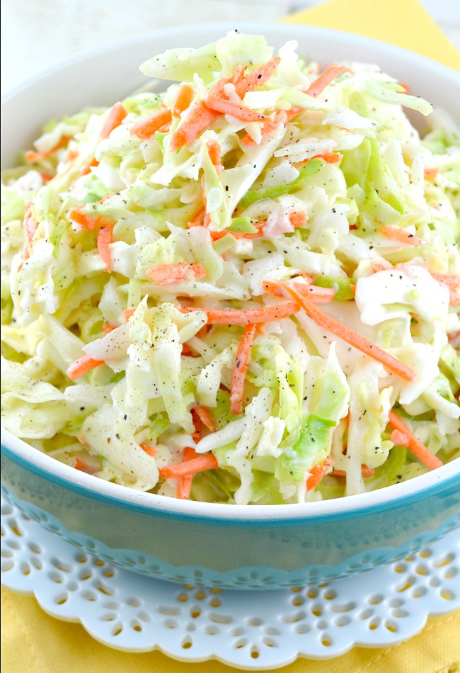

Cole Slaw

Description
This light yet creamy cabbage salad is a great side for any occasion,
especially at a barbeque!
Ingredients
- shredded cabage and carrots
- mayonnaise
- apple cider vinegar
- salt
- pepper
- sugar
Instructions
- mix mayonnaise, sugar and acv into a bowl
- toss cabbage and carrots into bowl and mix
- add salt and pepper to taste
- enjoy!